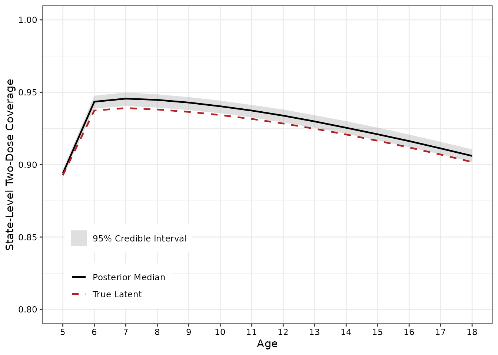
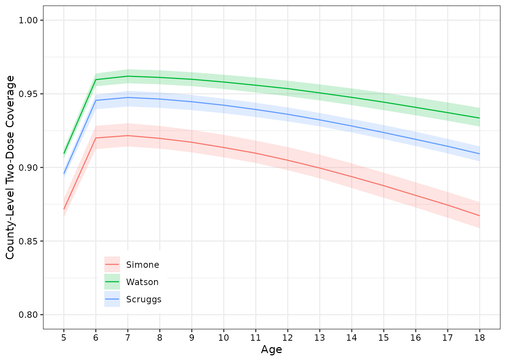

Introduction
imuGAP (Immunity: Geographic & Age-based Projection)
estimates an underlying process model for vaccination on an arbitrary
hierarchical population structure, which can then be used to predict
vaccination coverage. Internally, imuGAP performs Bayesian
inference via the Stan probabilistic programming language.
The package enables researchers and public health analysts to synthesize across multiple heterogeneous surveillance streams (such as national surveys, state school entry records, and local coverage censuses) to:
- Estimate current vaccination coverage across arbitrary sub-populations and geographic levels.
- Project cohort trajectories (e.g. coverage at each age from birth through adolescence for a given birth cohort).
- Impute missing data gaps across unobserved years, age groups, or sub-regions by leveraging inferred relationships via the process model.
Core Model Intuition
The core imuGAP model represents each target population
slice
(location
,
cohort born at time
)
as having an underlying non-uptake probability
,
with complementary uptake probability
.
Given a dose eligibility schedule
(in terms of time-in-life) and a force-of-vaccination rate
(in terms of absolute time), cumulative coverage at age
for the first dose is modeled as:
This formulation extends sequentially to multiple vaccine doses, conditional on receipt of prior doses. Sequential multi-dose regimens (e.g. Dose 1 at months, Dose 2 at years) are modeled as a continuous-time Markov transition process.
The Fit & Predict Loop
The following diagram shows the end-to-end fit and predict workflow:
1. Preparing the Inputs
imuGAP requires three core input tables:
-
locations: The nested population hierarchy (e.g. State County School). This may optionally include population sizes, which may be necessary to ensure accurate results when entities within the same layer differ substantially in size. -
observations: Empirical survey counts (positiveandsample_n) and censoring indicators. -
populations: Metadata and fractional weights mapping observations to discrete location/age/cohort/dose slices.
library(imuGAP)
library(data.table)
library(ggplot2)
data("locations_sim", package = "imuGAP")
data("observations_sim", package = "imuGAP")
data("populations_sim", package = "imuGAP")
head(locations_sim)
#> loc_id population parent_id
#> <char> <num> <char>
#> 1: State 2895.1333 <NA>
#> 2: Scruggs 1527.7000 State
#> 3: Simone 746.6333 State
#> 4: Watson 620.8000 State
#> 5: Chickadee Elementary 147.8333 Scruggs
#> 6: Nuthatch Academy 368.5333 Scruggs
head(observations_sim[, .(obs_id, loc_id, positive, sample_n, censored)])
#> obs_id loc_id positive sample_n censored
#> <int> <char> <num> <int> <num>
#> 1: 1 Chickadee Elementary 135 155 NA
#> 2: 2 Chickadee Elementary 124 152 NA
#> 3: 3 Chickadee Elementary 133 156 NA
#> 4: 4 Chickadee Elementary 127 155 NA
#> 5: 5 Chickadee Elementary 141 155 NA
#> 6: 6 Chickadee Elementary 139 158 NA
head(populations_sim)
#> obs_id loc_id cohort age dose weight
#> <int> <char> <int> <int> <int> <num>
#> 1: 1 Chickadee Elementary 1 5 2 1
#> 2: 2 Chickadee Elementary 2 5 2 1
#> 3: 3 Chickadee Elementary 3 5 2 1
#> 4: 4 Chickadee Elementary 4 5 2 1
#> 5: 5 Chickadee Elementary 5 5 2 1
#> 6: 6 Chickadee Elementary 6 5 2 1Input datasets are automatically validated and canonicalized during
sampling via canonicalize_locations(),
canonicalize_observations(), and
canonicalize_populations().
For an in-depth walkthrough of flexible surveillance stream structures—including right-censored observations (such as when surveillance reports only complete coverage for a bundle of vaccines, not specifically the target vaccine) and composite observations that mix multiple age groups or populations—see Included Example Datasets and Data Validation.
2. Fitting the Model
You can fit the model to your data by calling
sampling(). Configure model options (such as B-spline
degrees of freedom and dose eligibility ages) with
imugap_options(), and specify MCMC sampler settings
(chains, iterations, backend) with stan_options():
# Configure model options
im_opts <- imugap_options(df = 5L, dose_schedule = c(1L, 4L))
# Configure Stan MCMC sampler
st_opts <- stan_options(chains = 4, iter = 2000, seed = 1L)
# Fit the model
fit <- sampling(
observations = observations_sim,
populations = populations_sim,
locations = locations_sim,
imugap_opts = im_opts,
stan_opts = st_opts
)For this vignette, you can load the pre-computed fit fixture
fit_sim bundled with the package:
data("fit_sim", package = "imuGAP")
fit_sim
#> An imuGAP model fit (`imugap_fit`):
#> Hierarchy: 28 locations across 3 layers (root: 'State')
#> Observations: 841 total (775 uncensored, 66 right-censored)
#>
#> Inference for Stan model: impute_school_coverage_process_v6.
#> 4 chains, each with iter=1000; warmup=500; thin=1;
#> post-warmup draws per chain=500, total post-warmup draws=2000.
#>
#> mean se_mean sd 2.5% 25% 50% 75%
#> beta_bs[1] -1.68 0.00 0.03 -1.74 -1.70 -1.68 -1.66
#> beta_bs[2] -1.88 0.00 0.05 -1.98 -1.92 -1.88 -1.85
#> beta_bs[3] -2.48 0.00 0.09 -2.65 -2.54 -2.47 -2.42
#> beta_bs[4] -3.13 0.00 0.09 -3.34 -3.19 -3.13 -3.07
#> beta_bs[5] -2.59 0.00 0.09 -2.76 -2.65 -2.60 -2.54
#> sigma_layer[1] 0.59 0.04 0.36 0.19 0.33 0.48 0.74
#> sigma_layer[2] 0.75 0.01 0.14 0.54 0.65 0.73 0.83
#> lambda_raw[1] 1.02 0.00 0.03 0.97 1.00 1.02 1.03
#> lambda_raw[2] 1.06 0.00 0.01 1.04 1.05 1.06 1.07
#> lp__ -78864.68 0.52 5.59 -78876.24 -78868.39 -78864.50 -78860.68
#> 97.5% n_eff Rhat
#> beta_bs[1] -1.61 1181 1.00
#> beta_bs[2] -1.78 622 1.01
#> beta_bs[3] -2.31 967 1.00
#> beta_bs[4] -2.95 724 1.01
#> beta_bs[5] -2.42 1236 1.00
#> sigma_layer[1] 1.57 68 1.05
#> sigma_layer[2] 1.07 141 1.02
#> lambda_raw[1] 1.07 508 1.01
#> lambda_raw[2] 1.09 1031 1.00
#> lp__ -78854.78 115 1.02
#>
#> Samples were drawn using NUTS(diag_e) at Wed Sep 30 17:56:21 2026.
#> For each parameter, n_eff is a crude measure of effective sample size,
#> and Rhat is the potential scale reduction factor on split chains (at
#> convergence, Rhat=1).3. Defining a Prediction Target Grid
To generate coverage predictions for specific populations, define a
target grid using create_target().
For example, to evaluate a cross-sectional “snapshot” across all locations for ages 1 through 18 and doses 1 and 2:
target_grid <- create_target(
location = unique(locations_sim$loc_id),
age = 1:18,
cohort = max(populations_sim$cohort) - 18,
dose = c(1, 2),
mode = "snapshot"
)
head(target_grid)
#> obs_c_id loc_id age cohort dose weight
#> <int> <char> <int> <num> <num> <num>
#> 1: 1 State 1 29 1 1
#> 2: 2 Scruggs 1 29 1 1
#> 3: 3 Simone 1 29 1 1
#> 4: 4 Watson 1 29 1 1
#> 5: 5 Chickadee Elementary 1 29 1 1
#> 6: 6 Nuthatch Academy 1 29 1 14. Predicting Coverage
Pass the model fit and target grid to predict() to
generate posterior draws of coverage on the natural (probability)
scale:
# Generate posterior draws for each target slice
predict_res <- predict(object = fit_sim, target = target_grid, posterior_size = 100)You can load the pre-computed prediction fixture
predict_sim:
data("predict_sim", package = "imuGAP")
predict_sim
#> An imuGAP predictions object (`imugap_predict`):
#> Targets: 1008 target population slices across 28 locations
#> Posterior: 100 draws (4 chains x 25 iterations)
#>
#> Use summary() to compute quantiles or as.data.frame() to convert to a long table.5. Summarizing and Visualizing Predictions
You can compute vaccination coverage estimate summary statistics
(posterior mean, median, and credible intervals) on the natural
(probability) scale across your prediction targets using
summary():
summary_predict <- summary(predict_sim)
# Filter coverage estimate statistics to a specific target slice (e.g. age 4, dose 2)
summary_predict[age == 4 & dose == 2]
#> obs_c_id loc_id age cohort dose weight loc_c_id
#> <int> <char> <int> <num> <num> <num> <int>
#> 1: 589 State 4 26 2 1 1
#> 2: 590 Scruggs 4 26 2 1 2
#> 3: 591 Simone 4 26 2 1 3
#> 4: 592 Watson 4 26 2 1 4
#> 5: 593 Chickadee Elementary 4 26 2 1 8
#> 6: 594 Nuthatch Academy 4 26 2 1 11
#> 7: 595 Blue Heron School 4 26 2 1 5
#> 8: 596 Flycatcher Elementary 4 26 2 1 10
#> 9: 597 Bluebird Learning Center 4 26 2 1 6
#> 10: 598 Catbird Academy 4 26 2 1 7
#> 11: 599 Finch Elementary 4 26 2 1 9
#> 12: 600 Sparrow School 4 26 2 1 12
#> 13: 601 Towhee Children's Academy 4 26 2 1 13
#> 14: 602 Warbler Elementary 4 26 2 1 14
#> 15: 603 Egret Elementary 4 26 2 1 17
#> 16: 604 Cardinal Academy 4 26 2 1 16
#> 17: 605 Bunting School 4 26 2 1 15
#> 18: 606 Tanager Academy 4 26 2 1 21
#> 19: 607 Oriole Youth Academy 4 26 2 1 20
#> 20: 608 Grosbeak Learning Center 4 26 2 1 18
#> 21: 609 Junco Elementary 4 26 2 1 19
#> 22: 610 Meadowlark School 4 26 2 1 26
#> 23: 611 Goldfinch Elementary 4 26 2 1 23
#> 24: 612 Mockingbird Academy 4 26 2 1 27
#> 25: 613 Kinglet Learning Center 4 26 2 1 25
#> 26: 614 Vireo School 4 26 2 1 28
#> 27: 615 Kingfisher Academy 4 26 2 1 24
#> 28: 616 Cormorant Elementary 4 26 2 1 22
#> obs_c_id loc_id age cohort dose weight loc_c_id
#> <int> <char> <int> <num> <num> <num> <int>
#> mean q2_5 q50 q97_5
#> <num> <num> <num> <num>
#> 1: 1.104322e-18 -2.248590e-16 0 1.122705e-16
#> 2: 1.102710e-18 -2.253816e-16 0 1.125022e-16
#> 3: 1.085128e-18 -2.189846e-16 0 1.094102e-16
#> 4: 1.124123e-18 -2.286228e-16 0 1.142522e-16
#> 5: 1.138822e-18 -2.291671e-16 0 1.144810e-16
#> 6: 1.121200e-18 -2.260797e-16 0 1.131517e-16
#> 7: 1.139273e-18 -2.279568e-16 0 1.143589e-16
#> 8: 1.157565e-18 -2.328202e-16 0 1.165398e-16
#> 9: 1.081059e-18 -2.327105e-16 0 1.162452e-16
#> 10: 1.066942e-18 -2.235786e-16 0 1.113962e-16
#> 11: 1.039517e-18 -2.249501e-16 0 1.122585e-16
#> 12: 1.144320e-18 -2.301355e-16 0 1.156978e-16
#> 13: 1.035260e-18 -2.081030e-16 0 1.042077e-16
#> 14: 9.864142e-19 -2.124083e-16 0 1.063404e-16
#> 15: 1.122067e-18 -2.302849e-16 0 1.149964e-16
#> 16: 7.208082e-19 -1.632878e-16 0 8.260618e-17
#> 17: 9.924801e-19 -1.899646e-16 0 9.566276e-17
#> 18: 1.220798e-18 -2.329985e-16 0 1.172655e-16
#> 19: 1.040437e-18 -2.134915e-16 0 1.070448e-16
#> 20: 8.159540e-19 -1.567597e-16 0 7.998433e-17
#> 21: 1.070918e-18 -2.203369e-16 0 1.100475e-16
#> 22: 1.120467e-18 -2.230641e-16 0 1.113371e-16
#> 23: 1.126192e-18 -2.268952e-16 0 1.140766e-16
#> 24: 1.117334e-18 -2.231372e-16 0 1.117595e-16
#> 25: 1.139574e-18 -2.338003e-16 0 1.170686e-16
#> 26: 1.145899e-18 -2.345822e-16 0 1.172991e-16
#> 27: 1.095860e-18 -2.201464e-16 0 1.106704e-16
#> 28: 1.114309e-18 -2.261598e-16 0 1.131108e-16
#> mean q2_5 q50 q97_5
#> <num> <num> <num> <num>State-Level Coverage Trajectory
The following plot shows predicted state-level two-dose coverage across ages 5 to 18 against the true simulation baseline:
Show plot code
data("latent_params_sim", package = "imuGAP")
state_predict <- summary_predict[loc_id == "State" & dose == 2 & age > 4]
state_idx <- predict_sim$target[loc_id == "State" & dose == 2 & age > 4, which = TRUE]
state_predict[, latent := latent_params_sim$coverage[state_idx]]
ggplot(state_predict) +
aes(x = age) +
geom_ribbon(aes(ymin = q2_5, ymax = q97_5, fill = "95% Credible Interval"), alpha = 0.25) +
geom_line(aes(y = q50, color = "Posterior Median"), linewidth = 0.8) +
geom_line(aes(y = latent, color = "True Latent"), linetype = "dashed", linewidth = 0.8) +
scale_x_continuous(breaks = 5:18, minor_breaks = NULL) +
coord_cartesian(ylim = c(0.8, 1.0)) +
scale_color_manual(
name = NULL,
values = c("Posterior Median" = "black", "True Latent" = "firebrick")
) +
scale_fill_manual(name = NULL, values = c("95% Credible Interval" = "grey50")) +
theme(
legend.position = "inside",
legend.position.inside = c(0.05, 0.05),
legend.justification.inside = c(0, 0)
) +
labs(x = "Age", y = "State-Level Two-Dose Coverage")
County-Level Estimates
The following plot compares county-level coverage estimates across counties:
Show plot code
summary_predict |>
subset(loc_id %in% c("Scruggs", "Simone", "Watson") & dose == 2 & age > 4) |>
transform(loc_id = factor(loc_id, levels = c("Simone", "Watson", "Scruggs"))) |>
ggplot() +
aes(x = age) +
geom_line(aes(y = q50, color = loc_id)) +
geom_ribbon(aes(ymin = q2_5, ymax = q97_5, fill = loc_id), alpha = 0.2) +
theme(
legend.position = "inside",
legend.position.inside = c(0.12, 0.05),
legend.justification.inside = c(0, 0)
) +
scale_x_continuous(breaks = 5:18, minor_breaks = NULL) +
coord_cartesian(ylim = c(0.8, 1.0)) +
scale_color_discrete(NULL, aesthetics = c("color", "fill")) +
labs(x = "Age", y = "County-Level Two-Dose Coverage")
Extracting Long-Format Draws for Custom Analysis
Use as.data.frame() to extract individual MCMC draws in
a tidy, long format:
draws_df <- as.data.frame(predict_sim)
head(draws_df)
#> iteration chain obs_c_id loc_id age cohort dose weight loc_c_id coverage
#> <int> <int> <int> <char> <int> <num> <num> <num> <int> <num>
#> 1: 1 1 1 State 1 29 1 1 1 0
#> 2: 2 1 1 State 1 29 1 1 1 0
#> 3: 3 1 1 State 1 29 1 1 1 0
#> 4: 4 1 1 State 1 29 1 1 1 0
#> 5: 5 1 1 State 1 29 1 1 1 0
#> 6: 6 1 1 State 1 29 1 1 1 0Summary and Guide to Other Vignettes
To explore advanced features and deeper technical details, see the following companion vignettes:
Included Example Datasets and Data Validation: Detailed documentation of the bundled simulation fixtures, surveillance stream types (ChildVaxView, SchoolVaxView, TeenVaxView), canonicalization rules, and validation error diagnostics.
Flexible Location Layers in imuGAP: Demonstrates how
imuGAPestimates the process model across 1-layer, 2-layer, and multi-layer hierarchical population structures, showing how inferred relationships enable sub-regional estimation and cohort projection.Fit Inspection and Stan Diagnostics: Comprehensive guide to MCMC convergence assessment, parameter extraction with
extract_imugap(), and parameter recovery trace plots for , , , and .